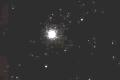
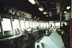
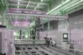
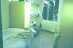
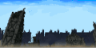
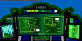
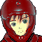

ナレーション 「独立自治権を勝ち取った宇宙移民者群セツルメントは、ようやく得た平和の中に麻痺し、やがては特権主義社会を生み出し、結局は自らが小セツルメントへの圧政を強いるようになる。時に宇宙世紀２５５年。各地で起きたセツルメント内紛争は、体制側と、反体制側に別れてその共同戦線を張り、セツルメント間による強大な戦禍を巻き起こしつつあった」
タイトル
|
− ＡＷＡＫＥ − |
セツルメント（宇宙コロニー）が映り、そこへ向かう光が見える。

光が次第に増え、大写しになる小型宇宙戦艦「オデッセイア」
航行中の小型艦である。
その船体には、ＡＥＧＺのログマーク。
ブリッジ。

 副艦長：ダニエル 「間もなくブルーアンガーと合流です」
副艦長：ダニエル 「間もなくブルーアンガーと合流です」
 艦長：キャロライン 「了解。セツルメント宙域までは？」
艦長：キャロライン 「了解。セツルメント宙域までは？」
ダニエル 「約二〇分です」
キャロライン 「Ｇの整備は？」
 メカニック・チーフ：ドックにいるジーン（通信モニター） 「ソードケイン、ヴォーテックス、ともに万全です」
メカニック・チーフ：ドックにいるジーン（通信モニター） 「ソードケイン、ヴォーテックス、ともに万全です」

ドック。
キャロライン 「ソードケインのＳＰ装備は？」
ジーン 「終わってますよ」
答えるジーンの前方に白と赤のＭマシン、ＧソードケインとＧヴォーテックスが見える。
白いソードケインは１０Ｍを切る全長だが、ヴォーテックスはその倍以上ある。
ブリッジ。
キャロライン 「イヴリンとアベル君をスタンバイさせといて。第二戦闘配備発令。のんびりランデブーしてる暇はないわ、一刻も早くブルーアンガーへ着艦させて。長官への挨拶には私が出向きます」
ダニエル 「へいへい、・・・イヴリン・ル・グイン、第二戦闘配備だ。デッキで待機」
 モニターからの声：イヴリン 「了解」
モニターからの声：イヴリン 「了解」
面倒臭そうなダニエルに、むっとするキャロライン。

自室のベッドで眠っているアベル。
夢の中。現在より、２〜３年前だと思われる。
街が戦火に包まれている。避難命令は出た後なのか、人はほとんどいない。
爆発が起きる。屋根の吹き飛んだ建築物の中で、子供が二人。怯える少女ユーニスと、それをかばう少年アベル。

 アベル 「ユーニス、ここはもう駄目だ」
アベル 「ユーニス、ここはもう駄目だ」
 ユーニス 「お母さんは！？」
ユーニス 「お母さんは！？」
アベル 「とにかく逃げるんだ。お母さんは後で探してあげるから」
ユーニス 「う、うん」
ユーニスの手を引いて逃げ出すアベル。だが、逃げだした先にも爆発が起きる。
アベル 「こっちにもマシンが・・・」
ユーニス 「お母さん・・・！」
ユーニスを連れ、別方向へ逃げ出す。建築物の隙間の裏道だ。
アベル 「こっちから抜けだすよ」
ユーニス 「うん」
あきらかに破壊された建築物同士が小さなアーチを作っている。アベルはそこにユーニスを運ぶ。
アベル 「あいつらが去るまで、ここに隠れていれば・・・」
その時、ユーニスが叫ぶ。
ユーニス 「こっちに来る！」
影になって見えないが、２本アンテナ付きマシンのシルエットが、そばに落ちる。
アベル 「うわあっ」 ユーニス 「きゃああっ」
シルエットから声がする。マイクを通されているらしく、こもった声。
 マシンのパイロット：ＡＪ 「子供・・・！？ まだ民間人がいたのか。この辺りは焼け落ちるぞ。早く逃げろ」
マシンのパイロット：ＡＪ 「子供・・・！？ まだ民間人がいたのか。この辺りは焼け落ちるぞ。早く逃げろ」
その後ろから敵らしいＭマシンが着地。攻撃を開始する。
アベル 「後ろ・・・！」
ＡＪ 「くっ！ 何匹いやがるっ」
アベル達をかばいながら敵を撃破するＡＪ。だが被弾する。かなり大きな爆発。
ＡＪ 「安全な所まで逃げてる余裕はなさそうだな。子供二人なら何とか入れるかも知れん。乗れ」
シルエットからコックピットのハッチが開く。
アベル 「こっちへ！」
ユーニスを引っ張ってコックピットへ登る二人。マシンのダメージはかなり大きいようだ。
ユーニス 「・・・うん！」
コックピットに入る二人。それほど窮屈ではない。ユーニスを座席後部へやると、ＡＪはアベルを自分の前へと座らせる。

コックピット。
ＡＪ 「よく来たなボウズ」
笑うＡＪは、ハッチを閉じるが先ほどの被弾での被害が酷いらしい。スクリーンが半分作動していない。すると、叫び声をあげるユーニス。
ユーニス 「血が出てる！」
先ほどの被弾で、ＡＪも怪我をしているらしく、その左腕はだらりと下がっている。
ＡＪ 「見ての通りだ、ボウズ。左手が言う事をきかない。お前がそっちを握れ」
頷くアベルは、両手でマニピュレーターを握る。
ＡＪ 「撃ち方はわかるか？ そう。そうだ、機体は俺が敵の方へ向ける。照準はオートに切り替えた。トリガーはお前が引け。大丈夫だ。大抵の事はコンピュータがやってくれる」
アベル 「来た・・・！」
ＡＪ 「いいか。まだ引くなよ」
ＡＪ 「よし、撃て！」
トリガーを引くアベル。ライフルからビームが敵のＭマシンを貫き撃破。その感触に驚くアベル。爆発するＭマシンの衝撃に顔をそむけるユーニス。

アイキャッチ「Ｇ−ＧＵＩＬＴＹ」
夢の中：爆発シーンのリプレイ。
アベルの自室：艦の揺れで目覚めるアベル。
アベル 「・・・ブルーアンガーに着いたのか」中型戦艦ブルーアンガーに、オデッセイアが、着艦する。
艦橋：敬礼して待つキャロラインに、ＡＪが近付き、敬礼で答える。
ＡＪ 「ご苦労だったな、キャロライン・ディベラ艦長」
キャロライン 「はっ、ダグラス長官。今回のＧＬ計画を成功させ、何としてもアフラマズダとクレイドルを出し抜きしましょう」
ＡＪ 「このグレイゾンを・・・、そしてこの争いだらけの宇宙を我々の手で動かすとしよう」
ＡＪ 「物資の搬出急げ！」
キャロライン 「長官・・・」
ＡＪ 「はは。こんな会話を、ドクター・ケーラーが聞いたら何と言うかな」
キャロライン 「ドクターは研究が第一ですから」
ＡＪ 「だが、カーロはそんなに甘くないぞ」
キャロライン 「承知しています」
厳しい表情のキャロラインに破顔するＡＪ。
ＡＪ 「まぁ、堅苦しい話はオフィシャルの時だけにしよう。キャロル」
キャロライン 「まあ！ 今はオフィシャルですよ」
怒りながらも嬉しそうなキャロライン。
ＡＪ 「二人しかいない時は、プライベートでいい。任務は通信で話した通りだ。ここのゲリラに協力して、このセグメント・フォースの支柱を崩す」
キャロライン 「長官、ゲリラは差別用語ですよ」
ＡＪ 「そうだったな。訂正しよう。エクレシアに協力する」
キャロライン 「着艦は１３番ブロック。エクレシア体勢側のエリアですね」
ＡＪ 「この宙域はさずかに警備が薄いな。予定通り、ここを叩いて侵入する」
アベルの自室
モニターのダニエル 「キャロライン艦長から通達だ。初陣だぞ、アベル」
アベル 「ダニエルさん、・・・すぐに行きます」
シャツを着て部屋を飛び出すアベル。廊下でユーニスが声を掛ける。
ユーニス 「お兄ちゃん！」
アベル 「ユーニス、後でね」
デッキ：
パイロットスーツの女が、アベルに声を掛ける。アベルもパイロットスーツに着替え、小脇にヘルメットを抱えている。
ジーンが声を掛ける。
ジーン 「よう、ボウズ。ついに実戦だな」
アベル 「はい」
ヴォーテックスのパイロット：イヴリン 「アベルちゃーん、とうとう初陣ね」
アベル 「イヴリンさん」
イヴリン 「アタシは今回、待機よ。まぁ、あんたが危なくなったら出るわ」
アベル 「その時はお願いします」
照れ臭そうに笑うアベル、Ｇソードケインに搭乗。
アベル 「よっ・・・と」
コックピット・モニターに映るブリッジ。
キャロライン（モニター） 「アベル君、初任務・・・。戦闘相手は特待扱いしてくれないわよ」
ダニエル（モニター） 「びびってないだろうな」
アベル 「大丈夫です。充分に訓練しましたから」
キャロライン（声） 「訓練と実戦は違うわ。甘く見ないで」
ヘルメットを被りながら。
アベル 「わかってます。それで、状況は？」
キャロライン（モニター） 「相手は、これから接岸するセツルメントの警備隊よ。まだ警告は出ていないわ。もう発見されているだろうけど。・・・第一戦闘配備」

アベル 「了解です」
ヴォーテックスのコックピット
キャロライン（モニター） 「イヴリンも準備だけはしておいて」
イヴリン 「言われなくても出られるわよ」
ブリッジ
 警備隊（通信の声） 「認識不明の船体に警告する、所属を明らかにせよ」
警備隊（通信の声） 「認識不明の船体に警告する、所属を明らかにせよ」
ダニエル 「おっと、・・・早速ですよ」
警備隊（通信の声） 「我がセツルメントの領空に入ろうとしている。直ちに所属をあきらかにするか、進路を変更されたし。さもなくば、攻撃を開始する事も有り得る」
デッキ：ソードケインの中
アベル 「ハッチ・オープン、出られます」
ブリッジ
警備隊（通信の声） 「警告する。直ちに進路を変更されたし。さもなくば・・・」
キャロライン 「連中、もう動いてるわね」
ダニエル 「Ｍマシン六機・・・バーガンディーです」
キャロライン 「突破するわ。アベル君、敵は六機。増援が来る前に、全機を撃破して。八分よ」
アベル（声） 「タイマー、セットしました」
キャロライン 「もう一度言うわ。八分で全機を撃破して艦へと戻って」
警備艦。
 警備隊隊長 「何者だぁ？ こいつら。こんな辺鄙な宙域をウロウロと・・・」
警備隊隊長 「何者だぁ？ こいつら。こんな辺鄙な宙域をウロウロと・・・」
隊員 「ひょっとして、近頃ウワサに聞く、アンセスターとか名乗ってる宇宙海賊じゃないですか？ 狙われた船はことごとく沈められてるって話ですが・・・」
隊長 「海賊が狙うのは、武装艦や輸送船だけだ。こんな警備艦を襲った所で、メリットなんかない。思い過ごしだ」
隊員 「しかし」
隊長 「心配するな。Ｍマシンを六機も出撃させた。万にひとつ海賊だったとしても、尻尾を巻くさ」
隊員 「では、我が艦の警戒体制は？」
隊長 「第二戦闘配備のままでよし。まぁ、警告のひとつでも多く打っとけ」
デッキ：ソードケインのコックピット
アベル 「了解。ソードケイン、出ます！」
射出されるソードケイン。
ブリッジ
キャロライン 「頼むわよ」
警備隊 「そちらの行為は不法侵入と見なされた。迎撃を開始する」
ダニエル 「先に出したのはそっちでしょうにねえ、艦長」
キャロライン 「シュミレーション達成率１００％オーバーの真価を見せてもらうわよ、アベル君」
宇宙：ソードケインのコックピット
アベル 「六機・・・アレか」
宇宙
ビームライフルでの遠距離攻撃で敵を沈める。
アベル 「ひとつ・・・！」
アベル 「ふたつ、みっつ」
ブリッジ
ダニエル 「すげえ・・・！ あっという間に半分だ」
キャロライン 「すごいわ・・・」
宇宙
アベル 「よっつ」
ブリッジ
キャロライン 「どうやらオートマターね。アベル君の敵じゃないわ。シュミレーションで散々相手にしてるから、初陣を飾る相手としては最良かも知れないけど」
ダニエル 「オートマターって、無人自動操縦システムっすか？ やっぱセグメントの連中は金持ってんなァ」
キャロライン 「無駄口はやめなさい。ブラントン中尉。敵艦を捕らえつつ、艦を侵入させて」
ダニエル 「了解」
宇宙
アベル 「いつつ！」
アベル 「これで最後だ。・・・むっつ！」
ビームサーベルで最後の機体を沈める。
ブリッジ。
ダニエル 「パーフェクトだ。それも、四分ですよ」
キャロライン 「無駄口は後にして。・・・敵艦補足、出来てるわね。攻撃準備は！？」
ダニエル 「整ってますって」
キャロライン 「アベル君は攻撃線上から外れた！？」
ダニエル 「離脱してます」
キャロライン 「撃って！」
ダニエル 「はいよっ、攻撃開始！」
隊長 「ば、馬鹿な、こっちはマシンを六機も出したんだぞ！？」
隊員 「しかし、全機の識別信号がロストしてます！」
隊長 「そんなハズは・・・！？」
隊員 「ぜっ、前方より熱源！ 来ます！」
隊長 「回避しろ！ 左舷一杯！ 急げ！ 早く回ひ・・・」
光。
警備船を主砲で沈める。
キャロライン 「・・・ふぅ」
ダニエル 「首尾は上々ですよ、艦長どの」
モニターの声：アベル 「ソードケイン、着艦します」
キャロライン 「了解。ジーン伍長、お願いします」
モニターからジーンの声 「あいよー」
キャロライン 「・・・ブラントン中尉。そんなにわたしの命令を聞くのがお嫌かしら」
ダニエル 「口が悪いだけですよ。命令はちゃんと聞いてます、艦長どの」
デッキ
ヴォーテックスの中で、ふてくされるイヴリン。
イヴリン 「六対一で四分・・・、子供とは言え、クレイドル機関って訳か」
アベルを迎えるＡＪとユーニス。
ユーニス 「すごい、全部やっつけちゃったの・・・」
ＡＪ 「素晴らしい・・・。あの子供がここまで成長するとはね。迎えにいこうか、ユーニス」
ソードケインを降りるアベルを、走ってくるユーニスが迎える。
ユーニス 「お兄ちゃん！」
アベル 「ただいま。ユーニス」
ユーニス 「お帰りなさい。お兄ちゃん」
アベルがユーニスの頭を撫でる。
ユーニス 「へへへ」
遅れて歩いてくるＡＪ。
アベル 「ＡＪ！」
ＡＪ 「久しぶりだね」
アベル 「ＡＪ、いえ、ダグラス長官。ご無沙汰してます」
ＡＪ 「君に長官と言われると寂しいよ」
アベル 「・・・はい」
ＡＪ 「だが、シュミレーションの好成績を耳にした時は私も嬉しかったよ。今の戦闘も見たが・・・、アベル君、君はわたしの誇りだ」
アベル 「戦災孤児だった僕らを引き取ってくださった恩返し・・・出来てますか？」
ＡＪ 「ああ、勿論だ。だが、その成果はこれからだ。地球議会も、セグメントも、特権階級の連中ばかりが圧制を強いている。こんな世の中を何としても変えんとね」
アベル 「はい」
ＡＪ 「君たちのような戦災孤児を出さないためにも、私たちは戦わねばならん」
アベル 「人類の新たなる解放のために・・・、ですね」
ＡＪ 「そうだ。人類の新たなる解放のために」
アベル （僕たちは、戦わなきゃならない。僕や、ユーニスのような子供を作らないために・・・）
宇宙から、セツルメントへ侵入するオデッセイアを映し、フェイドアウト。
セグメント。
兵士 「どうぞ、こちらへ」
 シャイロン 「うむ」
シャイロン 「うむ」
 ルクレール 「お待ちしておりました。長旅、ご苦労様です、シャイロン・チェイ一佐」
ルクレール 「お待ちしておりました。長旅、ご苦労様です、シャイロン・チェイ一佐」
シャイロン 「有難う。たった今から、私が君たちの指揮官となる、シャイロン･チェイだ。・・・この仮面は、酷い傷痕を隠すためのものでね。気にしないでくれたまえ」
ルクレール 「・・・は」
シャイロン 「ここでの着任期間は短くなると思うが、よろしく頼むよ」
ルクレール 「・・・は、はい」
シャイロン 「それと、着任早々で悪いが、このリストの士官を調べてくれ」
ルクレール 「はい・・・。・・・・これは！」
シャイロン 「パーノッド派とリカード派、残る中立を選り分けてもらう」
ルクレール （・・・この男・・・！）
シャイロン 「私が来た以上、退屈はさせんよ」

ナレーション 「セツルメントへの侵入を果たしたアベルを待ち受けていたのは、正規軍と絶望的な状況で戦うゲリラだった。ゲリラに残された希望は、予言の告げる救世主しかない。アベルはその救世主と成り得るのか。次回、『Ｇの再来』 Ｇの鼓動が、今目覚める」